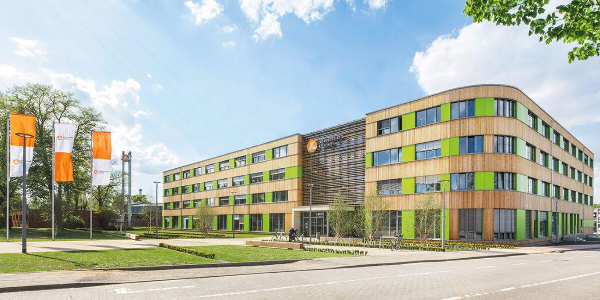

Rechtsform
GmbH
Stadtwerke Lübeck Gruppe GmbH,
Amtsgericht Lübeck HRB 4900
Stadtwerke Lübeck Gruppe
Lerne unser Ausbildungsunternehmen kennen und erfahre, was hinter der Stadtwerke Lübeck Gruppe steckt.
DAS IST UNSER WERK
Die Stadtwerke Lübeck Gruppe übernimmt wichtige Aufgaben für Menschen, Unternehmen und Kommunen in Lübeck und der Region.
Die Unternehmensgruppe verbindet dabei Energie, Wasser, Wärme, Mobilität und digitale Infrastruktur.

UNTERNEHMENSDATEN
GmbH
Stadtwerke Lübeck Gruppe GmbH,
Amtsgericht Lübeck HRB 4900
Geniner Straße 80
23560 Lübeck
Hansestadt Lübeck
Die Stadtwerke gehören vollständig
der Stadt.
ZAHLEN & FAKTEN
Quelle: swhl.de · Unternehmensangaben · Stand 2026
NETZDETAILS
Die verschiedenen Netze bilden die technische Grundlage für eine zuverlässige Versorgung in der Region.
4.625 km
1.266 km
746 km
140 km
UNSERE GESCHICHTE
Die Wurzeln der Stadtwerke reichen bis ins 18. Jahrhundert zurück.
Gründung des Vorgängers, der „Brand-Assekuranz-Kasse“.
Straßenbeleuchtung, Gasanstalt und Stadtwasserkunst kommen dazu.
Strom, Gas und Wasser werden gemeinsam betrieben.
Der Verkehr (Straßenbahn) kommt als weiterer Bereich hinzu.
Die Stadtwerke werden eine Körperschaft des öffentlichen Rechts.
Umbau zur Holding: Aus dem städtischen Eigenbetrieb werden eigene Gesellschaften.
Der Verkehrsbetrieb heißt jetzt Stadtwerke Lübeck Mobil GmbH.
Quellen: Wikipedia „Stadtwerke Lübeck“, Impressum swhl.de
UNSER PROFIL
Die Stadtwerke Lübeck verbinden Versorgung, Infrastruktur und zukunftsorientierte Entwicklungen unter einem gemeinsamen Dach.